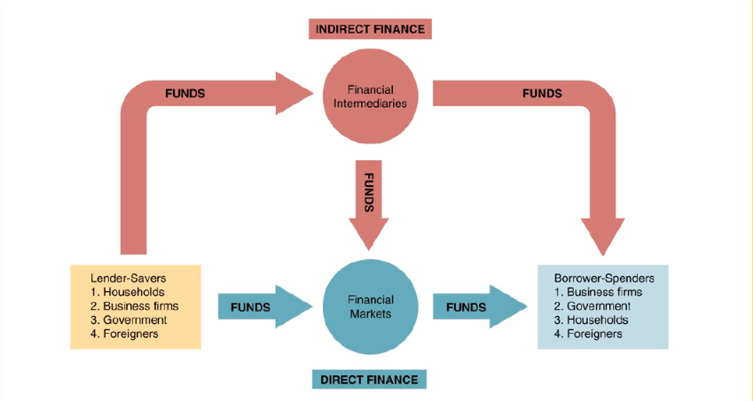

Frederic S. Mishkin
第一章 为什么？
为什么研究金融市场？
在金融市场中，资金从那些拥有闲置货币的人手中转移到资金短缺的人手中。债券市场和股票市场等金融市场将资金从没有生产用途的人向右生产用途的人转移，从而提高了经济效率。
那么它们到底是怎么运转的呢！不好奇吗！
债券市场与利率
证券是什么？
证券是用来证明持有人享有的某种特定权益的凭证。如股票、债券、本票、汇票、支票、保险单、存款单、借据、提货单等各种票证单据都是证券。 – MBA智库百科
书本上的定义为：发行人未来收入与资产的索取权。也就是所谓的本金加利息吧。
债券是什么？
债券是债务证券，它承诺在一个特定的时间段中进行定期支付。
债券(Notes)是政府、金融机构、工商企业等机构直接向社会借债筹措资金时，向投资者发行，承诺按一定利率支付利息并按约定条件偿还本金的债权债务凭证。 – MBA智库百科
利率是什么？
利率是借款的成本或为借入资金支付的价格。
股票市场
普通股，通常简称为股票，代表持有者对公司的所有权。股票是对公司收益和资产的索取权。
在股票市场中，所交易的是对公司收益的索取权，即股票。
为什么研究金融机构和银行？
银行与其它金融机构是金融市场能够运行的关键所在。没有它们，金融市场就无法将资金由存储者向右生产性投资机会的人转移。
金融体系的结构
金融体系是由银行、保险公司、共同基金、财务公司、投资银行等不同类型的私人金融机构构成的复杂系统。所有金融机构都受到政府部门的严格监管。
为什么金融中介是运转良好的金融市场的关键因素？为什么是它们而非其他机构和个人向一些机构和个人提供贷款？为什么它们是经济中受到最严格监管的部门？
银行与其它金融机构
银行是吸收存款和发放贷款的金融机构。然而，银行并非唯一重要的金融机构。
事实上，保险公司、财务公司、养老基金、共同基金和投资银行近年来的发展势头远远超过了银行。
它们为了获取利润是如何管理资产和负债的？监管形式是怎样的？为什么一些金融机构的发展要快于其它金融机构？
金融创新
即新的金融产品和服务的发展。
金融危机
所谓金融危机，是指金融市场出现混乱，并伴随着资产价格的暴跌以及众多金融机构和非金融机构的破产。这是资本主义经济体的一个重要特征。
为什么会产生金融危机？金融危机为什么会对经济产生如此严重的冲击？
为什么研究货币和货币政策？
经济并不总是平稳的。那么为什么经济波动如此剧烈？货币在经济周期（business cycles, 即经济总产出的上升和下降运动）形成的过程中扮演了十分重要的角色。随后章节的货币理论将货币数量的变动和货币政策与经济活动和通货膨胀联系起来，帮助我们理解货币供给和货币政策是如何作用于总产出的。
货币与通货膨胀
一个经济社会中商品和服务的平均价格被称为物价总水平(aggregate price level)。通货膨胀(inflation)是指物价水平的持续上涨。造成通货膨胀的原因是什么？由图1-4可以看出物价水平和货币供给的走势相当一致。因此货币供给的持续增加应当是推动物价水平持续上涨的一个重要因素。
货币与利率
两者存在着某种关联。为什么呢？
货币政策的实施
货币政策(monetary policy)，即对货币和利率的管理。中央银行(central bank)负责一个国家货币政策的实施。它是如何影响经济中的货币数量和利率的呢？
财政政策与货币政策
财政政策(fiscal policy)是关于政府指出和税收的决策。预算赤字(budget deficit)是指在一个特定的时间段中政府支出超过税收收入的差额，而当税收收入超过政府支出时，就会出现预算盈余(budget surplus)。国民产出用国内生产总值(gross domestic product, GDP)来衡量。
我们将考察为什么预算赤字可能导致较高的货币增长率、校稿的通货膨胀率和较高的利率。
为什么研究国际金融？
近年来，金融市场全球化加速发展。具体影响是什么呢？
外汇市场
跨国转移的资金必须由流出国的货币兑换为流入国的货币，外汇市场(foreign exchange market)就是货币兑换的场所。它是汇率(foreign exchange rate)决定的场所。
汇率的变动对于企业和公众意味着什么呢？如果本国货币的汇率降低，那么将会导致进口商品变贵，促使公众减少消费外国商品和服务的欲望，增加对本国商品的消费。相反，本国货币汇率上升意味着出口的商品在国外市场上更贵，因此会减少出口商品的交易量。
第一章附录 对总产出、总收入、物价水平和通货膨胀率的定义
总产出与总收入
GDP，指的是一个国家在一年中所生产的所有最终产品和服务的市场价值。这个指标不包括两类项目：1. 对过去所生产的产品的购买(如过去某位大师的画作) 2. 中间产品(认为最终产品的价值中已经包括了中间产品的价值)。
总收入(aggregate income)是指在一年中生产要素(factors of production)在生产产品和服务过程中所获得的全部收入。总收入与总产出认为是相等的，因为对最终产品和服务的支付必然会作为收入返回到生产要素所有者手中。
Why does aggregate expenditure equal aggregate income?
There are some needlessly complicated answers here. It’s actually very simple:
Every dollar that is expended is a dollar that has been gained as income; every dollar that is gained as income is a dollar that someone has expended.
Your income as an employee is an expenditure of your employer. Your expenditure on groceries is the income of your grocery store. Your expenditure on taxes is the income of the government; the government’s expenditure on social services is the income of the recipients. Every dollar that is gained is a dollar that has come from someone else; and unless money is being created or destroyed in some way (let’s leave central banks and mints and fractional reserves out of this), total expenditures have to equal total incomes.
综上所述，这个言论的正确性应该从宏观的货币角度来论断。一块钱的流入，对于另一方来说就是一块钱的流出。
实际量与名义量的区别
对于GDP的计算，由于货币价值的波动性，导致不同年份的GDP按照当年的货币进行计算没有可比性。此时的GDP成为名义GDP。名义一词表示，价值是按照现价计算的。与之相对的是实际GDP，实际一词表示价值是按照不变的价格来计算的。一般而言是将某一年的价格作为原点，将每一年的GDP与之比较，进而得到对当前GDP的认识。也就是所谓的如果想搞清楚自己的位置，必须有一个参照点的意思。
物价总水平
我们将物价总水平定义为经济社会中平均价格的指标。广泛使用的物价总水平的指标有三种：
- GDP平减指数(GDP deflator) $ = \displaystyle \frac{\text{名义GDP}}{\text{实际GDP}}$
- 个人消费支出平减指数(PCE deflator)，类似于GDP平减指数，是名义个人消费支出除以实际个人消费支出
- 消费者物价指数(consumer price index, CPI)，通过对一个典型城市家庭所购买的一些商品和服务定价，就可以得到消费者物价指数。
增长率与通货膨胀率
定义增长率$= \displaystyle \frac{x_t - x_{t - 1}}{x_{t - 1}}\times 100\%$
通货膨胀率定义为物价总水平的增长率。
第二章 金融体系概览
金融市场的功能
最基本的功能是，从那些由于支出少于收入而继续了盈余资金的家庭、公司和政府那里，将资金引导到那些由于支出超过收入而资金短缺的经济主体那里。

若没有金融市场，资金很难从缺乏投资机会的人手中向拥有投资机会的人手中转移。金融市场对于提高经济社会的效率至关重要。本质上，金融市场有助于资本的合理配置，从而对增加生产和提高效率做出贡献。
金融市场对我们的影响：通过允许消费者合理安排购买时机，直接改善消费者的生活福利。如果我想要买一套住宅，可是现在手中资金有限，那么就可以通过贷款来实现在使用的同时慢慢还款的过程。
金融市场的结构
债务与股权市场
一家公司或个人可以通过两种方式从金融市场获取资金。
第一种方式为发型债券或者抵押票据等债务工具。借款人以契约的方式向债务工具的持有人定期支付固定的金额。如果期限在一年以下，称为短期债务工具，在10年或10年以上就是长期债务工具，处于两者之间的则为中期债务工具。
第二种方式为发行普通股等股权工具。股权工具承诺持有者按份额享有公司的净收益和资产。通常，股权工具的持有者可以得到定期支付(股利)。
两相对比，拥有一家公司的股权的不利之处在于股权持有者是剩余索取人，也就是说该公司必须优先考虑债权人，之后才能向股权持有者支付。而有利之处在于股权持有者拥有的是公司的所有权，因此可以直接分享公司盈利能力增强和资产扩张的好处。相对的债权人获取的支付是固定的。
股利这个概念还不是很懂，查阅之：
就是公司把去年度的获利扣除法定的税及所有的开支还有保留部份盈余等….经由董事会开会后,,决定发放给股东的现金
一级市场和二级市场
一级市场指筹集资金的公司或政府机构将其新发型的股票或债券等证券销售给最初购买者的金融市场。
二级市场指交易已经发行的证券的金融市场。
投资银行是一级市场上协助证券首次出售的重要金融机构。其做法为证券承销。
经纪人(boker)是投资者的代理人，他们负责匹配证券的买房和卖方；交易商(dealer)按照报价买卖证券，从而将买卖双方联结起来。然而这一段话完全就是空话，从这里根本看不出来到底是想讲什么。boker与dealer的具体职能见这里：
Broker - 是帮别人买卖的代理人、中间人、经纪人（或实体），其代理人收入是靠以买卖产生的佣金为收入，而不具有买卖的财产所有权。
Dealer - 参与买卖的商人，交易员都可以称为Dealer, 它的特征是以自己身份（或自己代表的公司）做购买和销售，以赚取差价而获利，买卖过程中，他的财产所有权发生变化。
二级市场发挥着两个功能：1. 使得投资者可以更加容易和快捷地出售金融工具，实现筹措资金的目的，它们使得金融工具有更好的流动性(liquidity)。2. 二级市场决定了发行企业在以及市场上销售证券的价格。投资者在一级市场上购买证券的价格不会高于它们对二级市场上该证券价格的预期。
二级市场组织形态的分类
二级市场的组织形态有两种
- 交易所(exchange)：证券的买卖双方在一个集中的场所进行交易的二级市场。
- 场外市场(over-the-counter market, OTC)：分处各地的拥有证券存货的交易商随时向与其联系并愿意接受其报价的人在“柜台”上买卖证券的二级市场。
也就是on-line以及off-line的区别
另外一种分类方法是根据不同市场上所交易证券的期限长短来区分
- 货币市场：交易短期债务工具的金融市场
- 资本市场：交易长期债务工具与股权工具的金融市场
短期证券价格的波动性要小于长期证券，是更安全的投资方式。企业与银行通常将临时性的英语资金投放玉货币市场，以赚取收益。股票与长期债券等资本市场证券通常被保险公司、养老基金等金融中介机构所拥有。